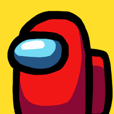

Это Among Us - многопользовательский онлайн. Здесь ты можешь:
Присоединяйтесь к своим товарищам по команде в многопользовательском онлайн экшене, игре по совместной работе и предательству!
Играйте онлайн или через локальный WiFi с 4-10 игроками, когда вы пытаетесь подготовить свой космический корабль к вылету, но будьте осторожны, поскольку каждый будет самозванцем, стремящимся всех убить всех!
Члены экипажа могут побеждать,выполняя все задания, открывая и голосуя самозванца с корабля.
Самозванец может использовать саботаж, чтобы вызвать хаос, что делает его легче убивать и лучше алиби.
